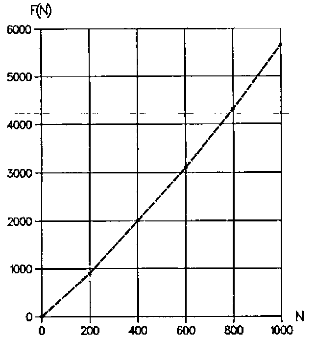
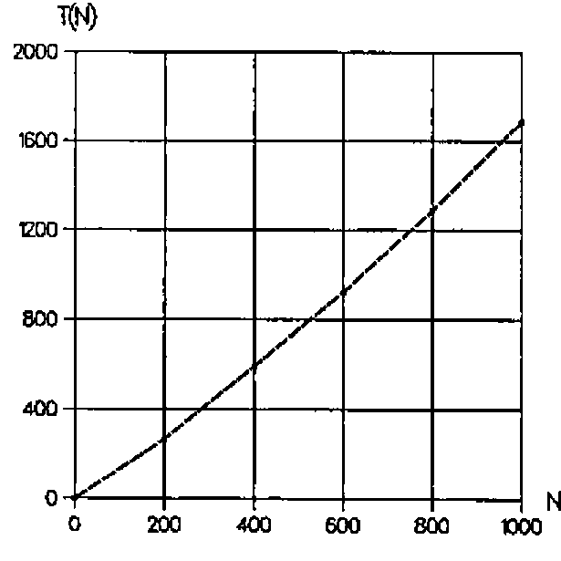

Niven Numbers and APL
Vector 14:2, page 121
Transcribed from the printed issue; not yet reviewed. Read it in the PDF of the issue, page 121
A positive integer or natural number is a niven number if it is divisible by its digital sum [1]. For instance, the integer 12 is a niven number as 12 is divisible by 1+2=3, while the integer 11 is not a niven number because 11 is not divisible by 1+1=2. Niven numbers were defined as such by R. Kennedy [1].
Starting with the niven number 1, let F(N) be the Nth niven number. Niven numbers F(N) for N = 1(1)100 are listed in Table 1.
1 2 3 4 5 6 7 8 9 10
12 18 20 21 24 27 30 36 40 42
45 48 50 54 60 63 70 72 80 81
84 90 100 102 108 110 111 112 114 117
120 126 132 133 135 140 144 150 152 153
156 162 171 180 190 192 195 198 200 201
204 207 209 210 216 220 222 224 225 228
230 234 240 243 247 252 261 264 266 270
280 285 288 300 306 308 312 315 320 322
324 330 333 336 342 351 360 364 370 372
Table 1: F(N) for N = 1(1)100
Niven numbers F(N) for higher values of N are given below (cf. also Figure 1 for N = 200(200)1000).
N F(N) N F(N) N F(N)
200 902 2000 12532 20000 166860
400 2000 4000 27168 40000 357210
600 3102 6000 43080 60000 570042
800 4311 8000 60816 80000 804600
1000 5652 10000 80118 100000 1033781
As F(N) increases with N, the frequency of the niven number decreases when N increases, Some aspects of this frequency have been studied by C. Cooper and R. Kennedy [2]. For instance, it was shown that there can exist at most twenty consecutive niven numbers. Further characteristics of such consecutive niven number sequences were studied by B. Wilson [3].
So far, however, no algorithm has been found to calculate F(N) directly from N. This means that, to calculate F(N), the sequence of positive integers or natural numbers 1, 2, 3,… has to be checked for niven-ness until N niven numbers have been found. In other words a loop of F(N) cycles has to be executed.
Two APL user-defined functions NIVEN1 and NIVEN2 for calculating the sequence of niven numbers F(1), F(2), …, F(N) are given below.
∇NIVEN1[⎕]∇
∇Z←NIVEN1 N;I;J
[1] →(N≤0)/0,Z←⍳I←0
[2] LAB:J←⍴⍕I←I+1
[3] →(0≠(+/(J⍴10⊤I)|I)/LAB
[4] →(N>⍴Z←Z,I)/LAB
∇
∇NIVEN2[⎕]∇
∇Z←NIVEN2 N;I;J
[1] →(N≤0)/0,Z←⍳I←0
[2] LAB:J←1+⌊10⍟I←I+1
[3] →(0≠(+/(J⍴10⊤I)|I)/LAB
[4] →(N>⍴Z←Z,I)/LAB
∇
NIVEN1 20
1 2 3 4 5 6 7 8 9 10 12 18 20 21 24 27 30 36 40 42
NIVEN2 20
1 2 3 4 5 6 7 8 9 10 12 18 20 21 24 27 30 36 40 42
On line [1], it is checked if N is negative, a counter I is set to 0, and the explicit result Z is set to the empty vector ⍳0. In line [2], the counter I is increased by 1 and the number of digits J of I is evaluated. In line [3], using the function encode, the counter I is split into its digits and, using the function residue, it is checked if I is divisible by the sum of those digits, in which case I is a niven number. Finally, in line [4], if the counter I is a niven number, Z is catenated with this counter, and the loop is closed when the shape of the explicit result is equal to N (or ⌈N). If N is negative or zero, the empty vector ⍳0 is returned. If N is positive, the vector of niven numbers F(1), F(2), ..., F(⌈N) is returned.

Figure 1: F(N) for N = 200(200)1000
The difference between NIVEN1 and NIVEN2 lies in the procedure used to count the digits of I. In NIVEN1 this is done by evaluating the shape of the format of I. In NIVEN2 it is done by adding a 1 to the floor of the common logarithm of I. To compare the effectiveness of the two procedures, cpu times T(N) for both functions have been monitored, and this for N = 200(200)1000. Average results in ms for 10 series of 100 executions are given in Table 2 (cf. also Figure 2). Differences in performance are negligible.
Table 2: CPU times T(N) in ms for N = 200(200)1000
T(N)/N increases very rapidly with N, such that for instance T(N) becomes about 29.3 seconds for N = 10000 and about 16.0 minutes for N = 100000.

Figure 2: CPU times T(N) in ms for N = 200(200)1000
In NIVEN1 and NIVEN2, the count J of the digits of I and checking if I is a niven number is done in two separate lines [2] and [3], this for readability. Performance in cpu times may be improved by substituting lines [2] and [3] by a one-liner. This is done in the user-defined functions NIVENA and NIVENB
∇NIVENA[⎕]∇
∇Z←NIVEN2 N;I;J
[1] →(N≤0)/0,Z←⍳I←0
[2] LAB:→(0≠(+/((⍴⍕I)⍴10)⊤I)|I←I+1)/LAB
[4] →(N>⍴Z←Z,I)/LAB
∇
∇NIVENB[⎕]∇
∇Z←NIVEN2 N;I;J
[1] →(N≤0)/0,Z←⍳I←0
[2] LAB:→(0≠(+/((1+⌊10⍟I)⍴10)⊤I)|I←I+1))/LAB
[4] →(N>⍴Z←Z,I)/LAB
∇
NIVENA 20
1 2 3 4 5 6 7 8 9 10 12 18 20 21 24 27 30 36 40 42
NIVENB 20
1 2 3 4 5 6 7 8 9 10 12 18 20 21 24 27 30 36 40 42
Results for the same benchmark as done for NIVEN1 and NIVEN2 are given in Table 3. Ratios of the results versus those for NIVEN1 and NIVEN2 are added.
N 200 400 600 800 1000
NIVENA 255 568 886 1236 1624
NIVENB 256 570 888 1237 1624
Ratios 0.957 0.960 0.960 0.960 0.961
Table 3: CPU times T(N) in ms for N = 200(200)1000
Just as for NIVEN1 and NIVEN2, differences in performance between NIVENA and NIVENB are negligible. Improvement of performance of the functions NIVENA and NIVENB versus the functions NIVEN1 and NIVEN2 is about 4% for the domain investigated but decreases for higher values of N, such that T(N) is still about 28.3 seconds for N = 10000 and about 15.6 minutes for N = 100000. In summary, performance in cpu times of the user-defined functions given is very poor for higher values of N and it would be a challenge to find an algorithm which drastically improves this performance.
Programming, calculations and benchmarks have been done on a MicroLine Pentium-S 100, with Dyalog APL/W Version 7.1.2, under Windows 3.11. Benchmarks have been done using the system function ⎕MONITOR.
References¶
- R. Kennedy, T. Goodman and C. Best: Mathematical Discovery & Niven Numbers. The MATYC Journal, Vol. 14, no. 1, 1980, pp. 21–25
- C. Cooper and R. Kennedy: On Consecutive Niven Numbers. The Fibonacci Quarterly, Vol. 31 no. 2, May 1993, pp. 146–151
- B. Wilson: Construction of Small Consecutive Niven Numbers. The Fibonacci Quarterly, Vol. 34 no. 3, June-July 1996, pp. 240–243
- Dyalog APL/W Language Reference – Version 7. Dyadic Systems Ltd., Basingstoke, 1994